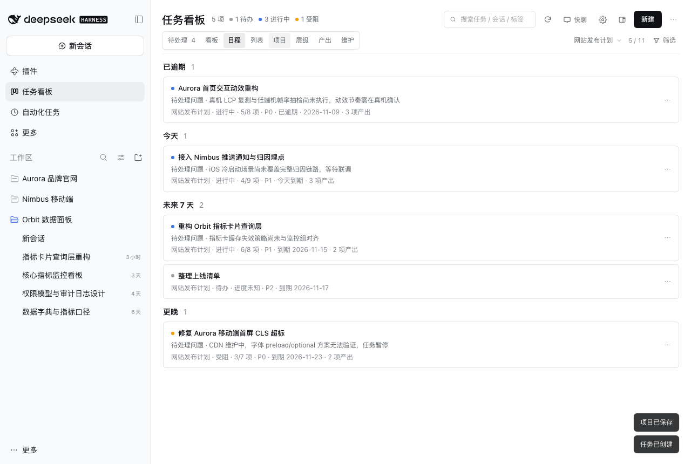

DEEPSEEK HARNESS · PLUGIN
Super Kanban · 智能任务看板
在 DSH 里管理会自动更新的项目和任务。查看运行中的会话和待处理请求，排定任务日期，追溯并验收交付物。
要求 DSH >= 0.2.1-rc.5 < 0.3.0 · Node.js >= 22.19.0（DSH 自带）· 零第三方依赖 · 无遥测
功能
- 项目与归属自建项目可跨工作区收纳任务，记备注、设到期日。卡片和详情以「工作区 › 项目」显示归属。
- 实时会话状态筛出运行中的任务。会话结束后，增量扫描可更新卡片和交付证据。
- 快聊连续追问，或写提示词、解释、总结、润色、中英翻译。回答可放入会话输入框或存为任务，记录只留在当前窗口。
- 待处理集中入口集中列出需要你介入的会话，直接打开审批、提问或方案审阅。
- AI 模型可选工具栏直接切换模型，研判、润色和快聊共用选择。不可用时扫描使用本地规则。
- 带着上下文继续本地模板汇总验收条件、未完成事项和交付物，草稿由你检查和发送。
- 全局、右侧与悬浮同一块看板的三种形态，同一时刻只显示一种。悬浮入口默认常驻会话界面，可拖动、可隐藏。
- 项目时间线与日程自动聚合工作区项目。按日期回看任务变更和交付，跟进即将到期的事项。
- 本地优先，无遥测看板数据保存在本机。可选 AI 请求由 DSH 配置的模型服务处理。
- 交付可验收详情首屏显示验收条件和主交付物。产物菜单支持复制路径、预览和用默认应用打开。
安装（三种方式）
- 插件市场（推荐）：DSH → 插件 → 发现（Discover）→ 添加索引源
https://topmindspace.github.io/dsh-super-kanban/index.json→ 打开 Super Kanban 详情 → 在版本列表选择精确版本（如0.10.1）→ 安装 → 启用 →Cmd+R刷新。 - npm（可安装特定版本）：DSH → 插件 → 添加插件 → 输入
dsh-super-kanban（最新）或精确版本dsh-super-kanban@<version>，例如dsh-super-kanban@0.10.1→ 安装 → 启用 → 刷新窗口。 - Git / 源码（可固定 tag）：克隆仓库 →
git checkout v<version>（例如v0.10.1）→./install.sh -y（需bash+python3）；不想用命令行可在 DSH 插件页添加仓库地址或选择本地目录。
安装后可在 DSH 插件页查看版本，或按 安装指南 2.3 节 用命令查看实际运行版本；更新、固定版本、回滚、卸载见 安装指南。
第一次使用
- 从左侧栏打开 任务看板。在会话里也可以点页头的看板图标，或点悬浮入口展开悬浮看板。
- 打开 设置确认扫描范围。启用 AI 时模型默认跟随 DSH。
- 点 扫描。按会话量需要几秒到几分钟，结束后悬停按钮或在「维护」查看结论。
- 在 待处理 打开需要介入的会话，或在任务详情查看验收条件和主交付物。
- 核对交付物后 确认验收。还需补做时，用 继续此任务 编辑并放入续做草稿，由你发送。
界面预览


常见问题
- 数据存在哪？卸载会丢吗？看板数据只写本机
~/.dsh/storages/super-kanban/；卸载插件不会删除数据。 - AI 不生效？检查「AI 联网研判」和工具栏当前模型。模型与凭证在 DSH 设置 → 模型中配置，扫描结论会说明降级原因。
市场索引与文档
index.json · format 1 · 版本列表以 index.json 为准 · MIT
README 安装指南 日常使用 排障手册 安全与隐私 更新日志
本页与 index.json 由仓库 docs/ 目录发布到 GitHub Pages；
页面版本号直接读取索引文件，不写死版本。